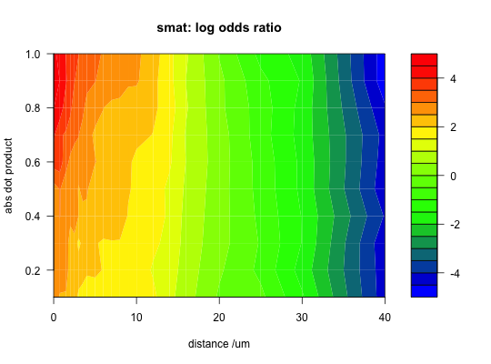

Calculate a scoring matrix embodying the logarithm of the odds that a matching pair of neurite segments come from a structurally related rather than random pair of neurons. This function embodies sensible default behaviours and is recommended for end users. More control is available by using the individual functions listed in See Also.
create_scoringmatrix(matching_neurons, nonmatching_neurons, matching_subset = NULL, non_matching_subset = NULL, ignoreSelf = TRUE, distbreaks, dotprodbreaks = seq(0, 1, by = 0.1), logbase = 2, epsilon = 1e-06, ...)
neuronlist of matching neurons.neuronlist of non-matching
neurons.NULL.TRUE).NeuriteBlast or options
for the call to mlply call that actaully iterates over
neuron pairs.A matrix with columns as specified by dotprodbreaks and rows
as specified by distbreaks, containing log odd scores for neuron
segments with the given distance and dot product.
By default create_scoringmatrix will use all neurons in
matching_neurons to create the matching distribution. This is
appropriate if all of these neurons are of a single type. If you wish to
use multiple types of neurons then you will need to specify a
matching_subset to indicate which pairs of neurons are of the same
type.
By default create_scoringmatrix will use a random set of pairs from
non_matching_neurons to create the null distribution. The number of
random pairs will be equal to the number of matching pairs defined by
matching_neurons This is appropriate if non_matching_neurons
contains a large collection of neurons of different types. You may wish to
set the random seed using set.seed if you want to ensure that
exactly the same (pseudo-)random pairs of neurons are used in subsequent
calls.
calc_score_matrix, calc_prob_mat,
calc_dists_dotprods, neuron_pairs
# calculate scoring matrix # bring in some mushroom body neurons library(nat) data(kcs20) # convert the (connected) tracings into dotprops (point and vector) # representation, resampling at 1 micron intervals along neuron fctraces20.dps=dotprops(fctraces20, resample=1) # we will use both all kcs vs all fctraces20 and fctraces20 vs fctraces20 # as random_pairs to make the null distribution random_pairs=rbind(neuron_pairs(fctraces20), neuron_pairs(nat::kcs20, fctraces20)) # you can add .progress='text' if this looks like taking a while smat=create_scoringmatrix(kcs20, c(kcs20, fctraces20.dps), non_matching_subset=random_pairs) # now plot the scoring matrix distbreaks=attr(smat,'distbreaks') distbreaks=distbreaks[-length(distbreaks)] dotprodbreaks=attr(smat,'dotprodbreaks')[-1] # Create a function interpolating colors in the range of specified colors jet.colors <- colorRampPalette( c("blue", "green", "yellow", "red") ) # 2d filled contour plot of scoring matrix. Notice that the there is a region # at small distances and large abs dot product with the highest log odds ratio # i.e. most indicative of a match rather than non-match filled.contour(x=distbreaks, y=dotprodbreaks, z=smat, col=jet.colors(20), main='smat: log odds ratio', xlab='distance /um', ylab='abs dot product')# 3d perspective plot of the scoring matrix persp3d(x=distbreaks, y=dotprodbreaks, z=smat, col=jet.colors(20)[cut(smat,20)], xlab='distance /um', ylab='abs dot product', zlab='log odds ratio')